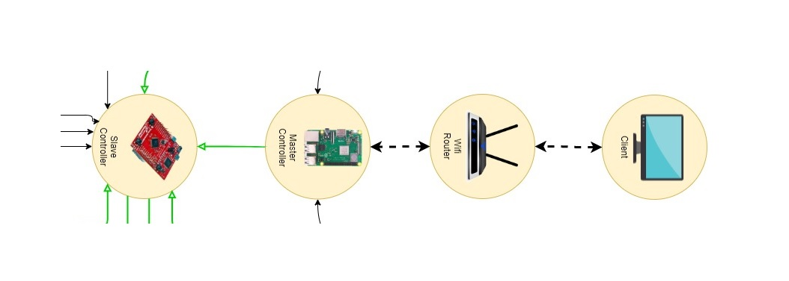

Earth Rover – Internet-Controlled Differential Robot
The Earth Rover is a real-time, internet-controlled differential drive robot equipped with multiple vision and environmental monitoring capabilities. It can be remotely accessed and operated via SSH over Wi-Fi, allowing command and control from any networked device. Designed with safety and automation in mind, the rover integrates:
- Dual camera setup for computer vision tasks including face detection/recognition.
- Fire detection module with audible alarm and automated email alerts.
- Real-time sensor fusion for localization and obstacle sensing.
The system is architected around two main subsystems running in parallel:
- Master Subsystem: Developed in Python, hosted on a Raspberry Pi 3.
- Slave Subsystem: Developed in C++, running on an Tiva-C.
Master Subsystem (Raspberry Pi):
- Receives control commands via SSH (Secure Shell) and parses them for execution.
- Transmits structured control packets to the Tiva-C slave via UART serial protocol.
- Handles high-level services:
- Face recognition using OpenCV and Python DNN modules.
- Fire detection using image processing and thermal thresholds.
- Alerting system: triggers buzzer and automated email notifications via SMTP libraries.
Slave Subsystem (Tiva-C):
- Receives control commands over UART, confirms with ACK/NAK protocol.
- Generates precise motor control signals using Tiva-C hardware PWM modules and motor drivers.
- Implements encoder-based odometry using interrupt-driven counting for position estimation.
- Integrates data from IMU for drift correction and motion profiling.
- Reads distance data from IR sensors for obstacle detection and safe navigation.